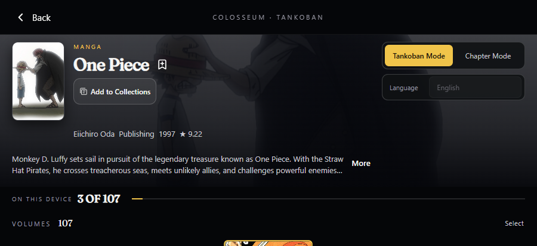
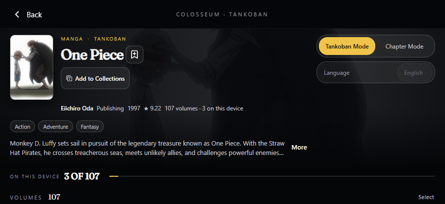

Same fixture and dimensions. Local HTML previews; no app changes.
Right/bottom: rebuilt CONTENT preview only. Its real TitlePageBar is missing; it still uses the older chrome. This is not a completed rebuilt-page mock.


Frozen Main.qml default: older. Desktop checkout views.ini: rebuiltTitlePages=true. Android checkout: false. Exact active runtime and approved route remain to be confirmed.